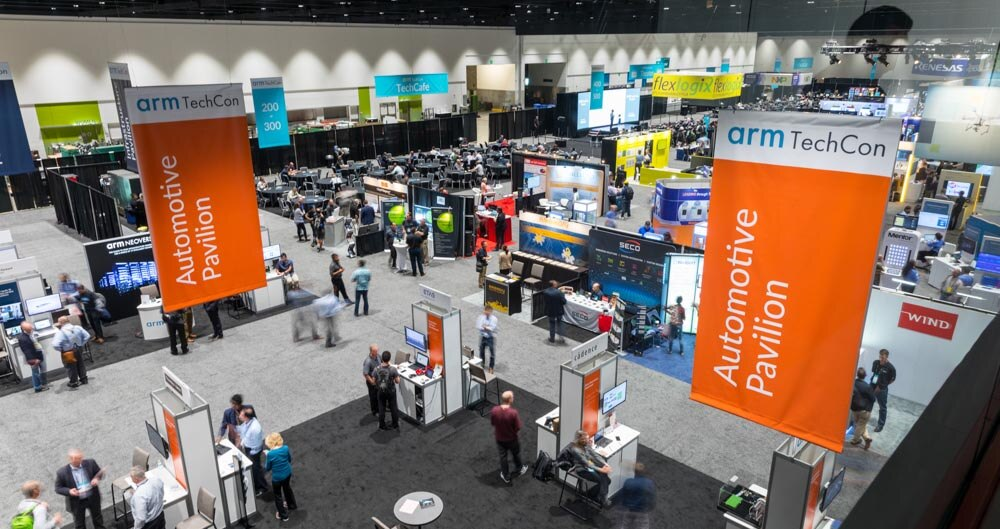
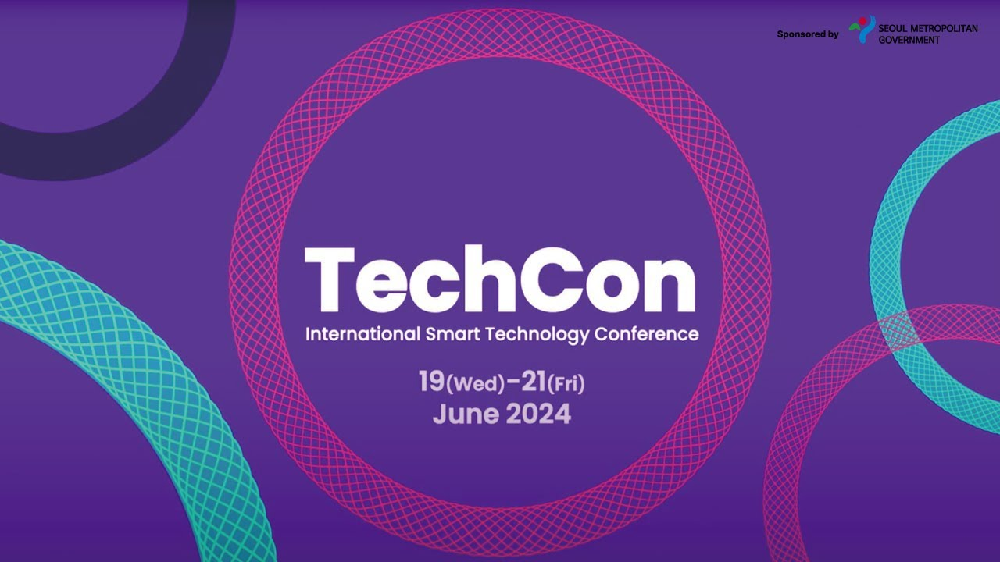

TechCon, as a concept, represents the long-standing human tradition of gathering to exchange knowledge and showcase technological advancements. While the modern term may refer to a specific conference or brand, its essence dates back to ancient times. From early civilizations where artisans and engineers collaborated on monumental projects like the pyramids, to medieval guilds that fostered craftsmanship and knowledge-sharing, these gatherings have always been central to innovation. The Renaissance and Scientific Revolution further formalized this through the formation of academies and scientific societies, while the invention of the printing press revolutionized the spread of information.
During the Industrial Revolution, large-scale exhibitions like the Great Exhibition of 1851 demonstrated how societies began organizing events specifically to highlight new inventions and industrial achievements. The 20th century ushered in a new era of specialized conferences tied to rapid advances in computing and telecommunications. Organizations such as the Association for Computing Machinery (ACM) and events like the National Computer Conference (NCC) became platforms for sharing breakthroughs. As digital technologies expanded, so did the variety of tech conferences, covering topics like software development, hardware, artificial intelligence, and blockchain.
Throughout history, key innovations—such as stone tools, agriculture, metallurgy, the printing press, electricity, and the steam engine—have continually reshaped societies. The invention of the computer and the rise of the internet brought about a new digital age, connecting people globally and transforming communication. Mobile devices and artificial intelligence now dominate the current landscape, shaping the future of healthcare, transportation, education, and more. TechCon, in its current form, continues this legacy by bringing innovators together to discuss, learn, and lead in the age of rapid technological advancement.

TechCon 2024 Mission Statement
TechCon 2024's mission is to empower technologists by providing education, inspiring innovation, and encouraging collaboration. The conference aims to share cutting-edge knowledge, spark creative ideas, and connect professionals to drive technological progress together.

The mission statement of techcon 2024 comference
Past Speakers

TECHCON 2024 brought together a diverse group of emerging researchers and industry experts to showcase cutting-edge work in materials science, systems security, and computational chemistry. Highlights included student presentations from institutions like Boise State, Ohio State, and Georgia Tech, focusing on secure programming, PFAS modeling, and autonomous system optimization. The event featured a celebratory banquet recognizing excellence in microelectronics, a keynote by Katie Yu on sustainable edge and automotive technologies, and over 200 SRC Research Scholars sharing their work. With strong representation from women, underrepresented minorities, and attendees from multiple countries, the conference fostered innovation, collaboration, and global networking opportunities in the tech industry.
 Eitan shay
Eitan shay
The conference concluded with a keynote titled "Velocity as a Virtue" by Eitan Shay, CPO at DarioHealth and a 2011 graduate. Drawing on his experience across startups, hyper-growth firms, and public companies, Eitan emphasized the value of accelerating product development to enable faster user feedback. His insights highlighted how speed can drive innovation and continuous improvement, leaving attendees inspired by his impactful career and practical advice on optimizing the development feedback loop.
 Kevin lee
Kevin lee
At TechCon, two targeted workshops helped business leaders deepen their understanding of large language models (LLMs) and how to apply them effectively. Manny Bernabe led “Custom GPTs for Business Leaders”, offering hands-on experience with generative AI tools, while Kevin Lee, PhD candidate and ML expert, facilitated “Introduction to Language Models for Business Leaders”, focusing on the foundational mechanics of LLMs. Participants left the sessions feeling more confident in experimenting with AI and better equipped to leverage data in model training and strategic business applications.